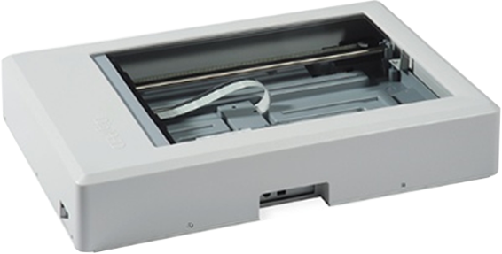
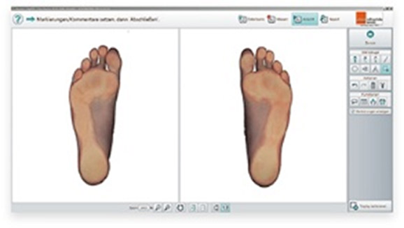
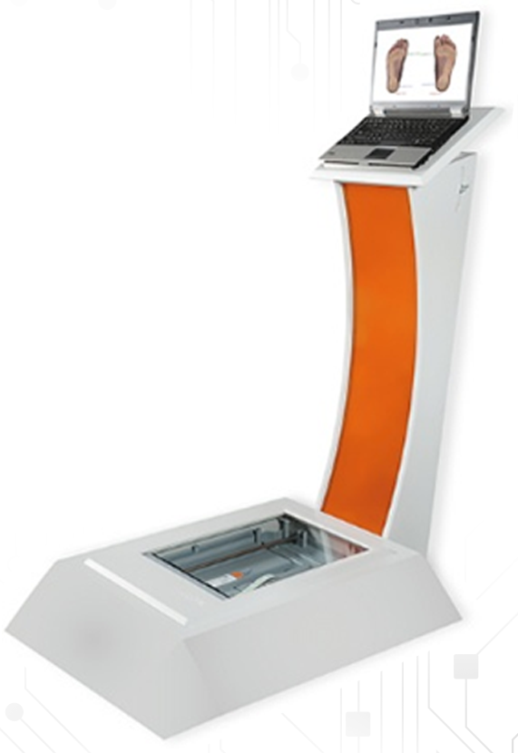

足底扫描仪
SCHEINWORKS DigiPED能够在数秒之内为客户进行足底数字扫描
软件会重点测量和记录足底的长、宽。如果扫描仪添加了相机功能，就可以分析并记录足底，尤其是脚跟处的情况。
为了更精确地制作鞋垫，您可以把扫描图片1:1地投影在屏幕上或者打印出来（需要A3打印机）。
足底的扫描图片也能收集到我们的SCHEINWORKS鞋垫项目数据库中。
| DigiPED足底扫描仪货号032211-100 | |
|---|---|
| 整体（长x宽x高） | 65.4 x 44.4 x 11.3 cm |
| 重量 | 约16.6kg |
| 扫描区域(长 x 宽 ) | 42.2 x 30.5 cm |
| 最大承重 | 约200 kg |
| 扫描时长 | 1约8秒 |
| PC端接口 | High-speed USB 2.0 |
| 电源 | 24 V DC |
| 消耗功率 | 备用8W，最高＜36W |
| 灯管类型 | 冷阴极灯 |
| 颜色(外部/内部) | 浅灰色/灰色 |

足底扫描仪
如果您不想把足底扫描仪直接放在地面上，我们推荐您安装一个专门的扫描仪展示台。
有了扫描仪展示台，既能保护足底扫描仪，又美观大方，还能作为放置笔记本电脑或PAD的工作台。